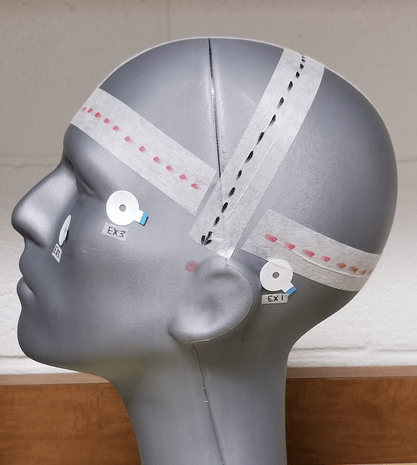
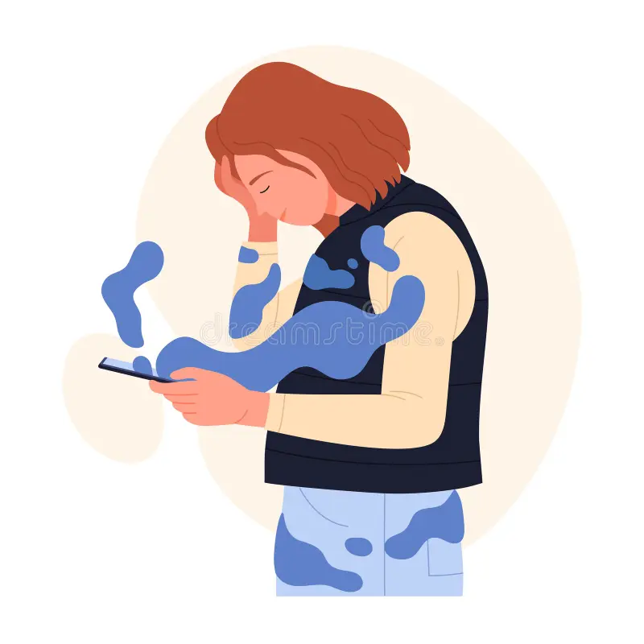

These are projects I've contributed to during my time as a research assistant at the University of Arkansas. I worked primarily in the CODA (Coginition of Depression and Anxity) Lab with projects relating to neuropathology and physical stimuli.
View CODA Lab Studies >CODA
VISION was my first study I undertook as a research assistant. This study aims to understand how visual attention and emotion are related using eye-tracking.

CODA
NICE was the second study I undertook for my psychology lab. This study aims to better understand how inhibitory control is related to psychopathology dimensions using event-related potentials (ERPs).
Personal Project
During my last year in college, I worked on a personal study about doomscrolling. The aim of the study was to compare social media usage with life satisfaction.
